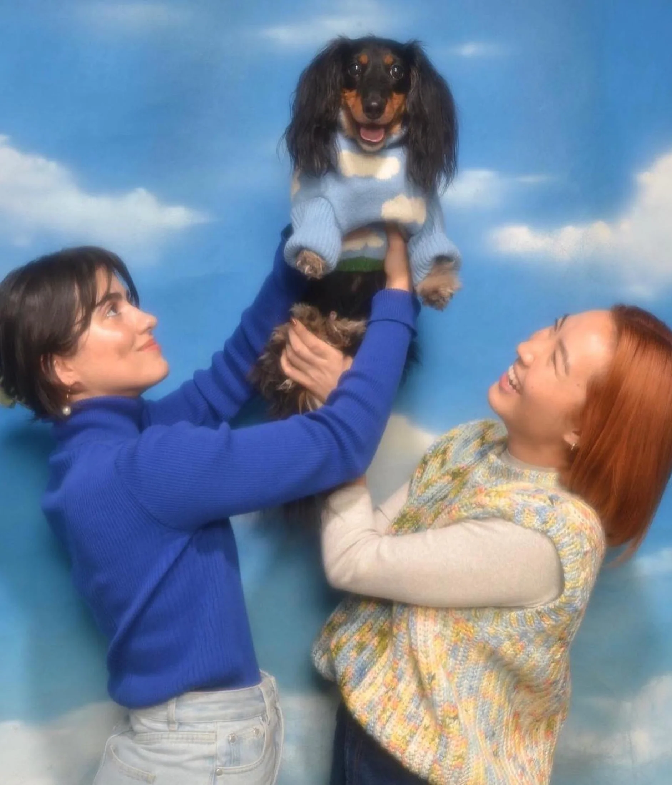
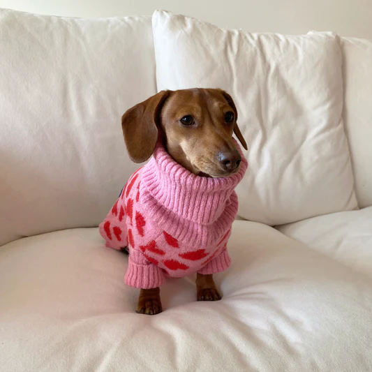

Little Beast
By: Giuliana Colandrea
June 20th, 2025
We started Little Beast because we wanted something a little nicer for our dog. We weren’t inspired by what was in the market. Frankly, we felt most pet products were uninspiring, low quality and kitschy. We just want to make good stuff with good taste. We also want to work with people who share the same values. That’s why we work with family-owned businesses, husband and wife teams like us, who build things by hand and in small batches. We also understand the impact fashion has on the environment. So, we’re constantly looking for ways to reduce our impact on our planet.
Little Beast Throughout the Years
2018
We took matters into our own hands and threw our life savings on handmade collars and leashes. They were really hard to make. We didn’t sell a whole alot. Oh, and our life savings was gone.
2019
With hundreds of unsold collars and leashes, we pivoted to a new idea: operating on online boutique from our 800 square-foot NYC apartment. LOL It was crazy aaand it didn't work out, again.
2020
We made the shift to focus on pet clothing. With Jisu and Lys’ background in art, we felt we could bring a unique take to it. We designed and launched our first collection for the FW 2020 season. To our absolute surprise, we actually started to sell stuff!
2021 to Today
We now work on Little Beast full time. We're still a team of three people just trying to make things happen! We are focused on creating new products that we hope will make everyone who comes across it, smile and feel good. Woohoo!
Little Beast exists to bring good vibes and positive energy to the world. We want to use our products to promote a net positive impact on the world. We also want to remind everyone to be kind and lead with empathy. Kindness is free. It can make the world a better place.